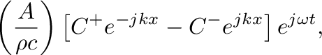
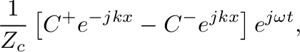

Next: Cascaded Cylindrical Sections Up: A Transfer Matrix Method Tutorial Previous: Overview
 by
by
![$\displaystyle P(x,t) = \left[C^{+}e^{-jkx} + C^{-}e^{jkx}\right] e^{j\omega t},
$](img8.png) (1)
(1)
 and
and  are complex amplitudes,
are complex amplitudes,
 is the lossless wave number,
is the lossless wave number,  is radian frequency and
is radian frequency and  is the speed of sound.
is the speed of sound.
 is the cross-sectional area of the pipe and
is the cross-sectional area of the pipe and  is the mass density of air.
is the mass density of air.
 |
 |
 | |
|
 | (3) |
 .
.

| Presented at the 180th Meeting of the Acoustical Society of America, 8-10 June 2021 by Gary P. Scavone. |  |
 |